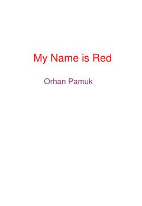

MOXVI asr Istanbulida sodir bo'lgan sirli qotillik va san'at haqidagi falsafiy detektiv roman.
Ushbu asar XVI asr Usmonli imperiyasida yuz bergan sirli qotillik va miniatyura sanati haqida hikoya qiladi. O'ldirilgan rassomning ruhi o'z qotilini topishni so'rab, o'quvchiga murojaat qiladi va o'sha davr Istanbulidagi madaniy muhitni tasvirlaydi.